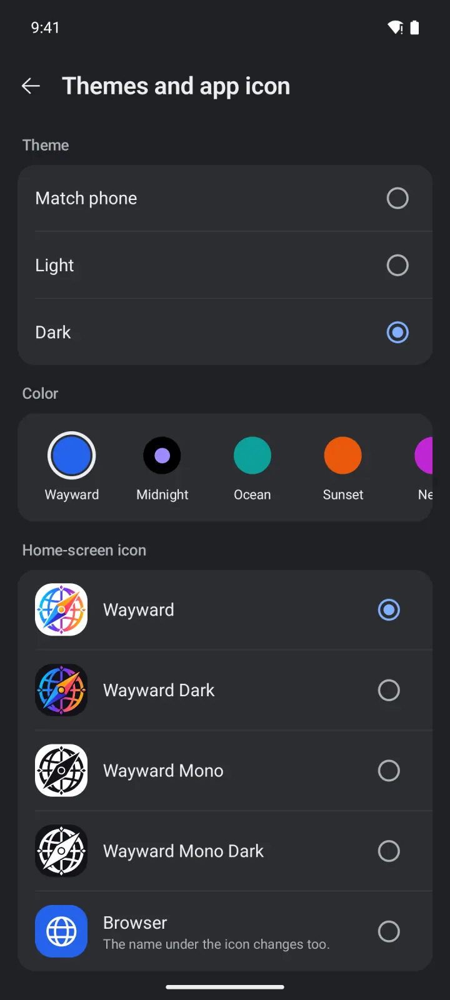
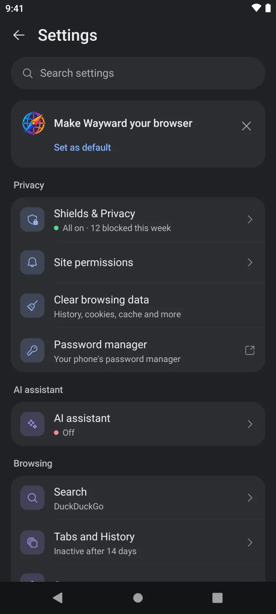
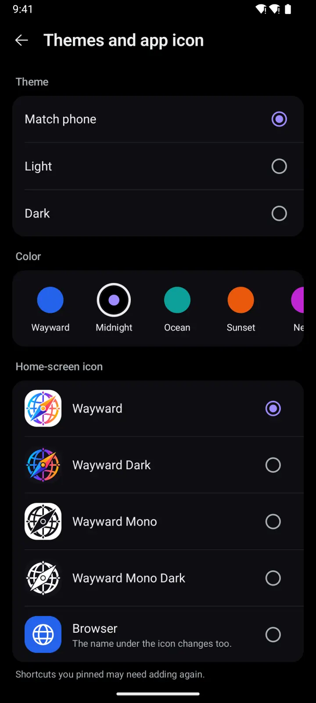
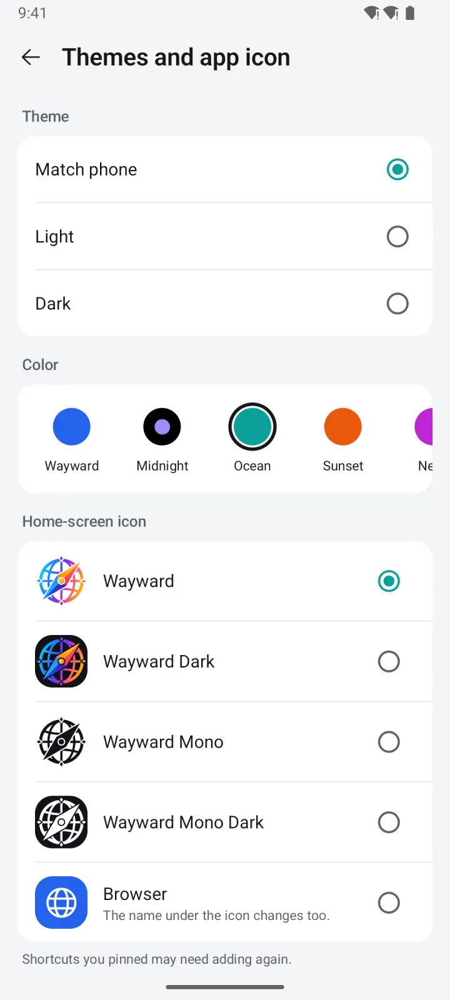
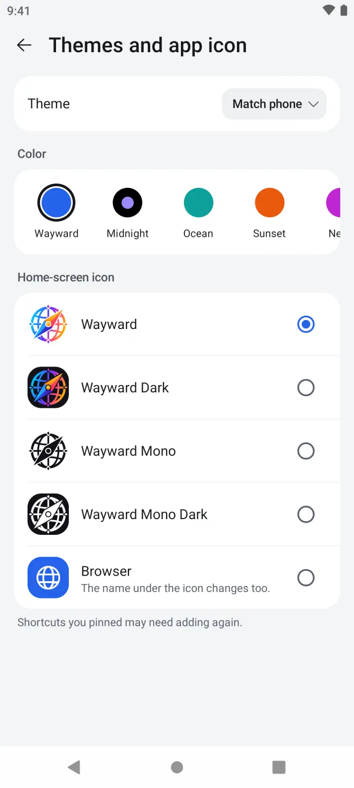
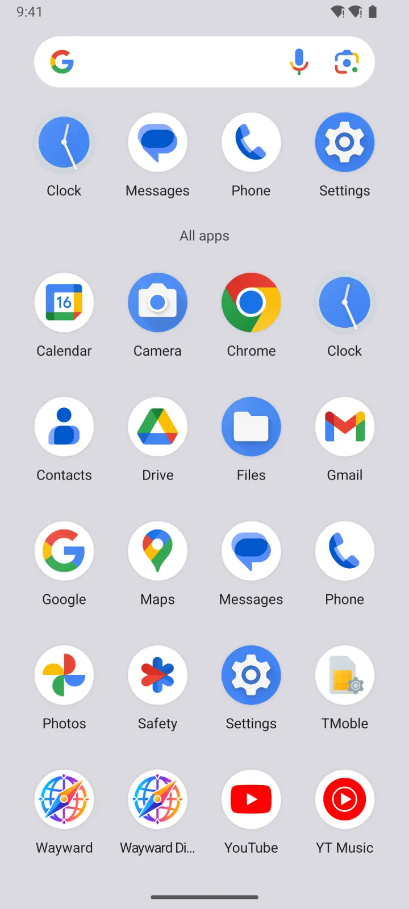
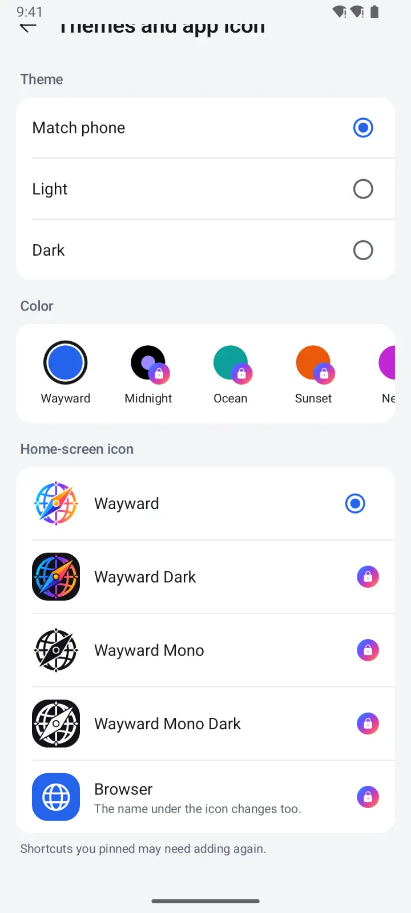

Change the theme, color and app icon
How-to
Choose a light or dark theme, change the color of Wayward's buttons and highlights, or pick a home-screen icon.
- Open the ⋮ menu and tap Settings.
- Under Appearance, tap Themes and app icon. The row shows what you have now, like "Match phone, Wayward".
Theme
- Match phone follows your phone's dark mode, switching when your phone does.
- Light or Dark keeps Wayward one way.
Wayward's dark theme is made of soft greys, not pure black. The clock and icons at the top of the screen, and the screen you see while Wayward opens, follow Wayward's choice. This only changes Wayward itself. For websites, see Turn on dark mode.


Color
Wayward, the blue, is free. Midnight, Ocean, Sunset, Neon and Mono come with Premium. Each one sets the color of Wayward's buttons, switches and highlights, in both light and dark.
Midnight is different: it's always dark, on true black, whatever Theme says.


Home-screen icon
Pick how Wayward looks on your home screen:
- Wayward, the compass globe in full color on white, is free.
- Wayward Dark, Wayward Mono and Wayward Mono Dark come with Premium.
- Browser, also with Premium, is a plain icon, and the name under it on your home screen becomes "Browser".
Wayward says Icon changed. Your home screen may take a moment to update. Some home screens take a little while to show the new icon. If you'd pinned shortcuts to your home screen (pages or saved tasks), you may need to add those again.
On phones that theme app icons to match the wallpaper, Wayward's compass globe takes your phone's colors like other apps' icons do.


Without Premium
The Premium colors and icons show a small lock. Tapping one opens the Premium page, where you can see what Premium includes: see Unlock Premium, or get it back.
If Premium ever ends on your phone (a refund, say), the color and the icon go back to Wayward's own.
